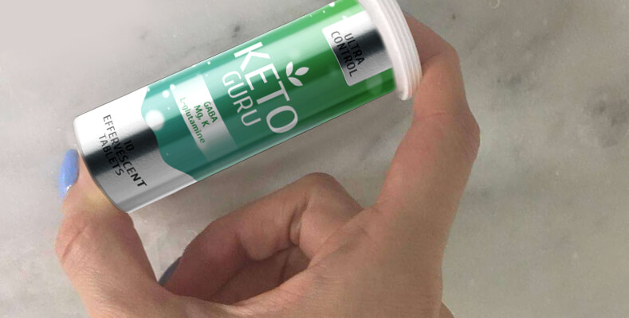

Kāpēc latviešu sievietes nevar notievēt? Taču Vācijā aptaukošanos var viegli izārstēt!
Saskaņā ar statistiku, vairāk nekā 86% latviešu nav apmierināti ar savu svaru un figūru. Diemžēl, saskaņā ar statistiku, tikai 6 no 100 sievietēm spēj zaudēt svaru. Pārējām slaiks ķermenis paliek tikai tāls sapnis. Lai vai kā, Eiropā APTAUKOŠANĀS PROBLĒMA IR RISINĀMA 5 PIRMS DAŽIEM GADIEM TIKA ATKLĀTA EFEKTĪVĀKĀ METODE...
"2 gadus nodzīvojot Vācijā, es zaudēju vairāk liekā svara, nekā 20 gadus dzīvojot Latvijā ! Lūk var iepazīties ar pasaulē labākajiem zinātniekiem, kas veica šo atklājumu. Es nezinu kā citās Eiropas valstīs, bet Vācijā praktiski vairs nav apvēlušos cilvēku".
savā Facebook profilā rakstīja Helēna Lapiņa, 52, kas pagājušā gada sākumā emigrēja no Vācijas. Zemāk varat iepazīties ar visu viņas stāstu.
"Šeit Latvijā neeksistē tāds termins kā dietoloģija. Es to sapratu, kad sāku par to interesēties. Precīzāk sakot, dietoloģija pastāv, bet tā ir ļoti novecojusi, palikusi 1990. gada līmenī. Ir tikai lērums nezināmu diētu, ko visi mēģina, pēc tam ciešu un neviens nesasniedz rezultātu.
Otrās grūtniecības laikā es ieguvu 28 liekus kilogramus, man bija 30 gadu. Pirms tam es biju slaida. Loģiski, pēc barošanas ar krūti, es nolēmu visu savu enerģiju vērst uz to, lai atgūtu skaistu figūru. Bet tas nav tik viegli kā šķiet!
Šo 20 gadu laikā es izgāju cauri ellei: es izmēģināju praktiski visu, kas varētu līdzēt man zaudēt svaru: Diētas: diedzēto graudu, Kremlina, Japāņu, Dukāna, kefīra, vienas dienas badošanās, paaugstināta olbaltumvielu satura un daudz citu. Es izmēģināju visas!
Es sportoju. Es pat 3 mēnešus apmeklēju sporta zāli! Šajā laikā es sāku zaudēt svaru (lēnām), bet tikko kā pārtraucu - es atguvu vēl vairāk svara. Turklāt es uzsāku dejošanu, bet tā ne nieka nelīdzēja.
Es izmēģināju dažādus kokteiļus, brīnumainus līdzekļus. Taizemes metodes, Redulismu, Reduksīnu, godži ogas, zaļo kafiju. Tas nekam nederēja, tikai lieka naudas šķiešana.
Man bija mīlas rokturīši, es apmeklēju vietējo ārstu, devos uz masāžām, darīju visu, lai uzvarētu cīņā ar lieko svaru. Ja kādreiz esat piedzīvojuši šādu problēmu, ja sapņojat par liekā svara zaudēšanu, tad jūs arī visu esat izmēģinājuši. BET NEKAS NEPALĪDZ!
Par spīti manām necilvēcīgajām pūlēm, es joprojām nespēju gūt rezultātus. Man beidzot izdevās tad, kad pārcēlos uz Vāciju. Pateicoties tam, ka Vācijā dietoloģija ir daudz attīstītāka. Tagad Vācijā ir ļoti maz cilvēku ar lieko svaru, ikviens zaudē lieko svaru pateicoties diētas speciālistiem. Tāpēc es arī nolēmu doties pie diētas speciālista, man šķita, ka pat mani kaimiņi redz, cik slikti izskatos.
Kad pastāstīju diētas speciālistei kā es centos atbrīvoties no liekā svara Latvijā, viņa acis iepletās no pārsteiguma. Viņa izstāstīja kādu interesantu faktu. Tā... Protams, es zināju, ka efektīvākā svara zaudēšanas metode ir keto-diēta. Tā uzlabo ogļhidrātu sadali - ikdienā ogļhidrāti nedrīkstētu pārsniegt 20g. Diētai galvenokārt jāsastāv no taukiem un olbaltumvielām. Svara zaudēšanas process šādā striktā režīmā sākas apmēram 7-10 dienas pēc diētas sākuma, kad organisms nokļūst ketozes stāvoklī. Daudziem cilvēkiem šāda diēta kļūst ļoti sarežģīta - ja noejat no ceļa, liekais svars ātri atgriežas. Vācu zinātnieki ir radījuši produktu, kas uztur organismu ketozes stāvoklī, neierobežojot uzturu un neliekot pārmērīgi sportot. Tas sāk iedarboties burtiski pēc tā lietošanas, kas ievērojami samazina laiku, kādā gaidāmi pirmie rezultāti. Šo produktu sauc Tas satur dažādas aktīvas sastāvdaļas, kas veicina tievēšanas procesu.
Ārsts man ieteica lietot 2 nedēļas un novērot rezultātus. Tā arī darīju. Divu nedēļu laikā zaudēju 11 kg. Es neko nedarīju - nekādas diētas, nekāda badošanās. Vēl pēc 2 nedēļām bija zuduši vēl 9 kilogrami. Tad ņēmu pauzi. Es turpināju zaudēt svaru, līdz ieguvu vēlamo izskatu. Kopumā es zaudēju 28 kilogramus/ Bez pūlēm un atgriezeniskā efekta. Labākais efekt šādai svara zaudēšanai ir paaugstināts enerģijas līmenis, kas nozīmē sliktu miegu un nemitīgu vēlmi būt aktīvam. Man bija lieliska iespēja pārvērst savu enerģiju darbībā. Ir patiesi grūti nosēdēt mierā. Es atradu izeju - es sāku apmeklēt peldbaseinu netālu no manām mājām. Tā es varēju iztērēt savu enerģiju un turklāt uzlabot savu veselību.
Ir liela atšķirība starp dietoloģiju Latvijā un Vācijā. Atklāti sakot, es dievinu Latviju, bet tās nemodernums ir skumdinošs. Es nezinu vai kaut kas mainīsies uz labu šeit, Latvijā. Tas ir vienkārši, viņi vismaz varētu pieņemt tādus pašus tievēšanas principus kā Eiropā.
Es neesmu pārliecināta...
Vai mēs varam latviešus iedvesmot kam labākam? Kāpēc mēs vienkārši nepārņemam Eiropas valstu pieredzi vismaz dietoloģijas sfērā?
Mēs jautājām šos jautājumus Mildai Liepiņai, vadošajai uztura speciālistei no Rīgas Veselības Centra, Medicīnas Zinātņu Doktorei, medicīnas un ārstnieciskā uztura centra direktorei Valsts Zinātņu Institūta "Valsts Uztura, Biotehnoloģijas un Pārtikas Drošības Centrā".
Latvijas pilsone Milda Liepiņa stāsta: patiesībā tas tā gluži nav. ir ļoti efektīvs un komplekss svara zaudēšanas veids. Par to nav šaubu. To ir atzinusi visa pasaules sabiedrība un daudzi ir patiesi zaudējuši svaru (tam ir vairāk nekā 98% efektivitāte). Turklāt, Eiropā tas parādījās tikai 2018 pagājušā gada beigās, tāpēc, jā, Latvijas dietoloģija nav Eiropas līmenī, šī atšķirība ir vērojama jau 30 gadus. Bet, protams, tā ir ievērojama. ir Eiropā pieejams līdzeklis, tāpēc loģiski, ka cilvēki Eiropā un Amerikā bija pirmie, kas to varēja izmantot. Bet arī mēs to noteikti sagaidīsim.
- Vai jūs, kā speciāliste, varētu vairāk pastāstīt par šī produkta efektu? Kā tas palīdz cīņā ar lieko svaru?
- Jā, protams. Kā autore teica, sastāvā ir aktīvās sastāvdaļas, kas bloķē ogļhidrātu uzsūkšanos un aizsargā no turpmāku tauku šūnu rašanās. Pateicoties tam, jūs varat nemainīt savu diētu un turpināt ēst savu iecienītāko pārtiku un ēdienus. Taču, ja papildus lietošanai, jūs veiksiet pāris izmaiņas uzturā un nedaudz pasportosiet, jūs redzēsiet vēlamos rezultātus daudz ātrāk.
Līdzeklim ir parocīga forma - putojošās tabletes ir jālieto tikai vienreiz dienā brokastu laikā. Tagad vairs nav jāuztraucas, ka noiesiet no ceļa un liekais svars atgriezīsies - palīdz automātiski sākt svara zaudēšanas procesu, turklāt tas ir pilnībā droši veselībai.
Tātad, patiesi palīdz automātiski zaudēt svaru.
papildus irizīna sintēzei, ir vairāki pozitīvi efekti, kas palīdz cīņā ar lieko svaru. Tieši tā, pilnībā sabalansētais komplekss palīdz svara zaudēšanā. Tā svarīgākās iezīmes:
- Normalizē metabolismu
- Aizsargā no atkārotu lieko kilogramu rašanās
- Atbrīvo ķermeni no liekā ūdens
- Attīra ķermeni no toksīniem un kaitīgajām vielām
- Samazina apetīti
- Pilnībā samazina bada sajūtu
- Samazina lieko tauku daudzumu
- Normalizē barības trakta un endokrīnās sistēmas funkcionēšanu
- Nostiprina ādu, samazina celulītu
Produktus ir patiesi revolucionārs, mēs uz to liekam augstas cerības. Tikai pirms sešiem mēnešiem, mēs veicām klīniskos pētījumus Uztura Institūtā (Latvijas Medicīnas Zinātņu Akadēmijā Rīgā). Kopumā apmēram 100 cilvēu (80% sievietes un 20% vīriešu) ar liekā svara problēmām piedalījās pētījumā. Visi no tiem mēnesi lietoja .
Pētījuma rezultāti:
- 43% no dalībniekiem - zaudēja 15 kg vai vairāk
- 52% no dalībniekiem - zaudēja 10-15 kg
- 3% no dalībniekiem - zaudēja mazāk nekā 10 kg
- 2% no dalībniekiem - nepavisam nezaudēja svaru vai zaudēja mazāk nekā 5 kg mēnesī
- 100% dalībnieku - nepiedzīvoja blakusefektus, nekādus traucējumus
Kā jūs redzat, ikvienam izrādījās noderīgs!
Iespaidīgi! Bet vai šis līdzeklis parādīsies Latvijas aptiekās? Kad tas notiks?
- Šobrīd mēs saskaramies ar vairākiem veidiem kā iepazīstināt ar šo līdzekli, saskaņā ar tievētāju standartiem. Bet viss ir ļoti sarežģīti, jo pastāv neticama birokrātija, tāpēc es droši nevaru pateikt, kad tiks pārdots mūsu aptiekās un vai vispār tiks. Varu teikt, ka saskaņā ar pozitīvākajām ziņām, tas nenotiks ātrāk kā . gadā.
Taču ir labas ziņas. Ikviens var pasūtīt internetā un mūsu mājaslapā .
Lūk pāris detaļas:
- Mūsu mājaslapā ir īpaša sadaļa , kurā jūs varat ierakstīt savu vārdu un telefona numuru.
- Pēc tam diētas speciālists jums atzvanīs un konsultēs un noskaidros piegādes adresi.
- Pēc 5-7 dienām, kurās paredzēta piegāde, jums būs jādodas uz pasta nodaļu un jāsaņem paciņa.
Sakarā ar lielo pasūtījumu skaitu, ražotājam bija jānosaka reklāmas laiks.
Šobrīd
reklāma ir spēkā tikai līdz
Kamēr tā ir spēkā, jūs varat saņemt oriģinālo preci, izmantojot oficiālo mājaslapu , pērkot par lielu atlaidi!

Uzmanību! Sakarā ar faktu, ka informācija par ir parādījusies vairākās lapās un acīmredzami palielinās pasūtījum skaits, noliktavas strauji piepildās. Tāpēc, ja vēlaties zaudēt savu ar palīdzību, pasūtiet, kamēr tas ir noliktavā.
Elizabete Krūmiņa
Paldies. Ļoti interesanti. Pasūtīju šo preci. Diētas speciālists man telefonsarunā teica, ka atlikušas tikai dažas paciņas. Visas izpārdotas. Tāpēc, ja vēlaties izmantot atlaidi, pērkat cik ātri vien iespējams.
Zane Burda
Mans draugs dzīvo Bulgārijā. Viņš arī zina par šo līdzekli. Daudzi zaudē svaru ar šī līdzekļa palīdzību.
Anna Jakrina
Oho, interesanti. Man ir paveicies. Pasūtīju 2 paciņas, viņi teica, ka nevaru pasūtīt vairāk par 2...
Ramona Mirte
svara zaudēšanai ir patiesi superīgs! Es vienmēr esmu bijusi apaļīga. Nebiju domājusi, ka tas varētu mainīties, bet zaudēju 34 kilogramus ar !!! Es sāku justies daudz labāk, zuda daudzas problēmas saistībā ar aptaukošanos! Es ikvienam iesaku šo produktu! Dzīvības glābējs!
Miks Kapers
Es ciešu no hipertensijas un sāpīgām locītavām, ko izraisa liekais svars. Mans ārsts ieteica iziet kursu. Es zaudēju 26 kg 2 mēnešos.
Alise Kauliņa
Tas patiesi ir kas labs! Es to lietoju tikai 5 dienas, ir zuduši 4 kg. Lietoju tikai , vairāk nedaru neko! Vienkārši automātiski zaudēju svaru.
Kristīna Bērza
Es arī to vēlos! Pasūtīšu cik ātri var! Es ceru, ka vēl var nopirkt. Es nespēju noticēt, ka šis līdzeklis ir tik lēts, bet man interesē tikai tā efektivitāte!
Anna Apsīte
Es atbrīvojos o 20 kg. Es nodarbojos ar jogu un sportoju zālē, es nezināju, kā iztērēt lieko enerģiju. Tagad esmu daudz tievāka, mans ķermenis ir pārveidots. Puiši nekad neskatījās manā virzienā, bet tagad visu laiku dzirdu komplimentus! Tas ir satraucoši.
Jūlija Saule
Mani draugi nemitīgi runā par šo līdzekli. Daudzi no viņiem izmantoja to, lai zaudētu svaru. Šis ir iecienīts līdzeklis manu draudzeņu vidū.
Aiga Krūmiņa
Es pasta nodaļā savu paciņu saņēmu vakar. Sāku lietot. Līdzeklis, tā iepakojums, viss izskatās lieliski!
Ruta Dambe
Es drīz precēšos. Ātri jāzaudē svars. Es tiešām ceru, ka viss, kas teikts par šo līdzekli, ir patiess. Es jau sen par to zināju, bet nezināju, ka tas ir tik lēts.
 Rūdolfs Sirmais
Rūdolfs Sirmais
Mana sieva zaudēja svaru ar . No sākuma es neticēju, ka tas viņai ir palīdzējis. Bet rezultāts ir super. Man jāatzīst, ka neesmu kļūdījies. Viņa jūtas lieliski un izskatās satriecoši. Es atcerēšos, ka man tas arī jālieto!
Sigita Roze
Pēdējā laikā visi runā par komplektu. Esmu lasījusi daudzas atsauksmes. Es arī nolēmu izmēģināt. Tas būtu muļķīgi, neizmantot šo iespēju.
Māra Ziemele
Es arī zaudēju svaru!!! 18 kilogramus 6 nedēļās! Es nekad nebiju zaudējusi tik daudz. Liels paldies par šo rakstu!!!
Sintija Pūpola
Paldies!!
Komentāri